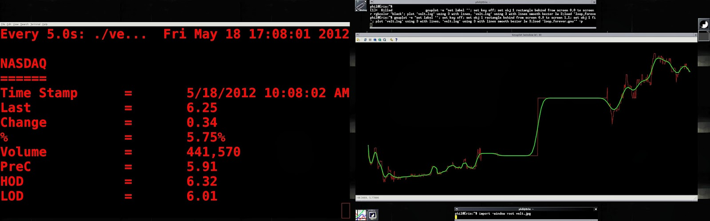

Just for fun -- snatch real time price quotes from NASDAQ, plot the results, create audible alert on new trend or if low/high of day is breached: Here, I'm watching VELT (Velti)

#!/bin/bash
echo "NASDAQ"
echo "======"
lynx --source http://www.nasdaq.com/symbol/velt/real-time |egrep "_[A-Z].*span" \\
|sed 's/.*id="//g; s/\">/ /g; s/\" style.* / /g; s/<\/span>.*$//g' \\
|egrep -v "_NO|_Market" \\
|sed 's/_TradeTimeStamp /Time Stamp\t=\t/; s/_LastSale /Last\t\t=\t/; s/_NetChange /Change\t\t=\t/; s/_PctChange /%\t\t=\t/; s/_Volume /Volume\t\t=\t/; s/_PreviousClose /PreC\t\t=\t/; s/_TodaysHigh /HOD\t\t=\t/; s/_TodaysLow /LOD\t\t=\t/' >velt.tmp
cat velt.tmp
last="`tail -1 velt.log |awk '{print $3}'`"
echo `cat velt.tmp |grep "Time" |awk '{print $4 " " $5}'` `cat velt.tmp |egrep "Last" |awk '{print $3}'` >>velt.log
echo "(`cat velt.log |grep "." |tail -20 |awk '{print $3"+"}' |tr -d '\n' |sed 's/\+$//'`)/20" |bc -l >ma20.tmp
echo "(`cat velt.log |grep "." |tail -50 |awk '{print $3"+"}' |tr -d '\n' |sed 's/\+$//'`)/50" |bc -l >ma50.tmp
ma20=`cat ma20.tmp`
ma20=`printf "%.2f" $ma20`
ma50=`cat ma50.tmp`
ma50=`printf "%.2f" $ma50`
hod=`cat velt.tmp |grep HOD |awk '{print $3}'`
lod=`cat velt.tmp |grep LOD |awk '{print $3}'`
result=$(awk -vn1="$last" -vn2="$hod" 'BEGIN{print (n1>n2)?1:0 }')
if [ $result -eq 1 ]; then
echo "exceeded high of day" |festival --tts 2>/dev/null &
else
result=$(awk -vn1="$last" -vn2="$lod" 'BEGIN{print (n1>n2)?1:0 }')
if [ $result -eq 0 ]; then
echo "low of day breached" |festival --tts 2>/dev/null &
fi
fi
if [ $ma20 != $ma50 ];then
result=$(awk -vn1="$ma20" -vn2="$ma50" 'BEGIN{print (n1>n2)?1:0 }')
if [ $result -eq 1 ]; then
if [ -e velt.trend ] ; then
trend=`cat velt.trend`
if [ $trend -eq 0 ] ; then
echo "positive trend. " $ma20 " over " $ma50 |festival --tts 2>/dev/null &
echo "1" >velt.trend
fi
else
echo "positive trend. " $ma20 " over " $ma50 |festival --tts 2>/dev/null &
echo "1" >velt.trend
fi
else
if [ -e velt.trend ] ; then
trend=`cat velt.trend`
if [ $trend -eq 1 ] ; then
echo "negative trend. " $ma20 " under " $ma50 |festival --tts 2>/dev/null &
echo "0" >velt.trend
fi
else
echo "negative trend. " $ma20 " under " $ma50 |festival --tts 2>/dev/null &
echo "0" >velt.trend
fi
fi
fi
Fire this up and run every 5 seconds:
$ watch -n5 ./velt.sh
Watch with gnuplot:
$ echo "pause 1; replot; reread;" >loop_forever.gnu
$ gnuplot -e set label ''; set key off; set obj 1 rectangle behind from screen 0,0 to screen 1,1; set obj 1 fillstyle solid 1.0 fillcolor rgbcolor 'black'; plot 'velt.log' using 3 with lines, 'velt.log' using 3 with lines smooth bezier lw 3;load 'loop_forever.gnu' -p